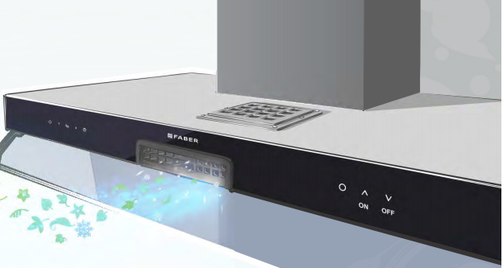

Faber Kitchen Chimney Project was a development of various Control Panels for new features to give fresh &
cool air to the user while cooking food, so that the user does not suffocated while cooking.
The aim of this project is to rotate 24V dc Fan at three different speeds.
Three different types of control panels were desgined, these are-
1) Knob based Control Panel which includes Voltage Regulator IC with Variable Resistor to achieve different speeds.
2) Button based Control Panel which includes a Microcontroller IC with two Push to ON buttons to achieve three different speeds.
3) Touch based Control Panel which includes a Microcontroller IC with inbuilt touch button to achieve three different speeds.
© 2020 Chirayu Barde